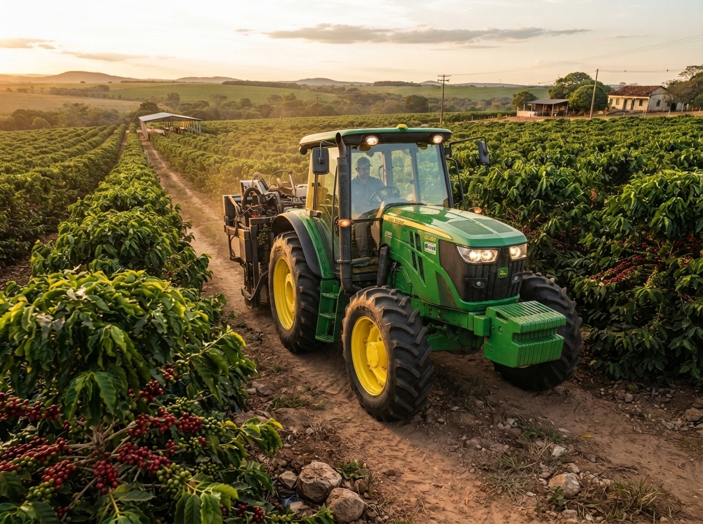

Encontre os melhores tratores e implementos agrícolas para sua propriedade, com preços justos, garantia e financiamento facilitado. Equipamentos revisados e prontos para aumentar sua produtividade no campo.
Compre Agora
Robustez e tecnologia para o seu campo
Trabalhamos com as principais marcas do mercado, dos modelos compactos para pequenas propriedades até os de grande porte para operações em larga escala. Máquinas revisadas, com garantia e financiamento facilitado para você produzir mais com menos esforço.
Robustez e tecnologia para o seu campo
Marcas John Deere, Case IH, New Holland e Valtra, com potências de 55 a 220 cv. Cada trator passa por uma revisão de 100 pontos antes da entrega, e você ainda conta com garantia estendida e simulação de financiamento na hora.
O parceiro certo para cada etapa da lavoura
Plantadeiras, grades, roçadeiras, carretas e muito mais — equipamentos compatíveis com diferentes modelos de trator, prontos para aumentar sua produtividade do plantio à colheita.
O parceiro certo para cada etapa da lavoura
Grades niveladoras, pulverizadores, carretas agrícolas e plantadeiras com compatibilidade garantida para o seu trator. Entrega e instalação inclusas, com nossa equipe orientando o ajuste ideal para o seu terreno.
Seu trator sempre pronto pra trabalhar
Peças originais, manutenção preventiva e suporte técnico especializado para reduzir o tempo parado e prolongar a vida útil do seu equipamento.
Seu trator sempre pronto pra trabalhar
Oficina própria com peças originais em estoque e atendimento emergencial em até 24h. Monte um plano de manutenção preventiva sob medida e evite prejuízo com máquina parada na safra.